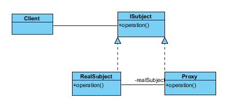
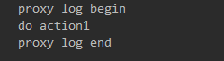
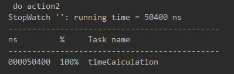

原文连接:https://www.cnblogs.com/masonlee/p/12072478.html
目录
一句话概括：java动态代理通过反射机制，可在不修改原代码的情况下添加新的功能，应用于多种场景，简单、实用、灵活，是java开发必学知识，本文将对动态代理使用进行详细介绍。
1. 引言
最近开发项目过程中需要使用动态代理来实现功能，趁此机会把动态代理的知识点进行了一次梳理。在java开发过程中，当需要对已有的代码（方法）前后添加新功能，而不想修改或不方便修改原代码的情况下，如需要在执行某个已有的方法前后输出日志，以记录方法执行的记录，这个时候，动态代理就派上用场了。动态代理可以有以下几使用场景：
- 记录跟踪：对函数执行前后统一输出日志跟踪执行情况
- 计时：统一对函数执行用时进行计算（前后时间记录之差）
- 权限校验：统一在函数执行前进行权限校验
- 事务：统一对函数作为事务处理
- 异常处理：对某一类函数执行输出的异常进行统一捕获处理
- 动态切换数据源：多数据源切换或动态添加数据源
动态代理首先是代理，对应的有静态代理，然后是动态代理，在Spring中还有动态代理的应用-AOP（面向切面编程）。本文针对这些内容，梳理了以下几个知识点：
- 了解代理模式并实现静态代理
- 针对动态代理，描述它使用到的反射机制，以及JDK、CGLIB两种动态代理的实现
- 描述如何在在Spring中，使用AOP实现面向切面编程
本文所涉及到的静态代理、反射、动态代理及AOP使用有相应的示例代码:https://github.com/mianshenglee/my-example/tree/master/dynamic-proxy-demo，读者可结合一起看。
2. 代理模式及静态代理
2.1 代理模式说明
代理，即调用者不需要跟实际的对象接触，只跟代理打交道。现实中典型的例子就是买房者，卖房者及房产中介。卖房者作为委托方，委托房产中介作为代理帮卖房，而买房者只需要跟房产中介打交道即可。这样就可以做到委托者与买房者解耦。再来看以下的图，就可以了解代理模式（定义：为其它对象提供代理以控制这个对象的访问）了：

Proxy相当于房产中介，RealSubject就是卖房者，Client就是买房者，operation方法就是委托的内容，Proxy与RealSubject共同实现一个接口，以表示他们的操作一致。
2.2 静态代理
按照上面的代理模式的代码实现，其实就是静态代理了。静态意思是代理类Proxy是在代码在编译时就确定了，而不是在代码中动态生成。如下，我们在示例代码中，接口中有两个函数（doAction1及doAction2），对应的实现类：
/**
* 服务实现类：委托类
**/
public class ServiceImpl implements IService {
@Override
public void doAction1() { System.out.println(" do action1 ");}
@Override
public void doAction2() { System.out.println(" do action2 ");}
}现在的需求是需要在doAction1方法执行前和执行后输出日志以便于跟踪，然后对doAction2方法的执行时间进行计算，但又不允许使用修改ServiceImpl类，这个时候，通过一个代理类就可以实现。如下：
/**
* 服务代理类：代理类
**/
public class ServiceProxy implements IService {
/**
* 关联实际委托类
**/
private ServiceImpl serviceImpl;
public ServiceProxy(ServiceImpl serviceImpl) {this.serviceImpl = serviceImpl;}
@Override
public void doAction1() {
System.out.println(" proxy log begin ");
serviceImpl.doAction1();
System.out.println(" proxy log end ");
}
@Override
public void doAction2() {
StopWatch stopWatch = new StopWatch();
stopWatch.start("timeCalculation");
serviceImpl.doAction2();
stopWatch.stop();
System.out.println(stopWatch.prettyPrint());
}
}客户端执行时，只需要使用代理类执行对应的方法即可，如下：
ServiceProxy serviceProxy = new ServiceProxy(new ServiceImpl());
serviceProxy.doAction1();执行的结果如下：


2.3 静态代理局限性
从上面代码可以发现，静态代理很简单，可以很快实现我们打印日志及计算执行用时的需求。但静态需求有它的局限性，就是当接口中的函数增加的时候，代理类中会出现很多臃肿、重复的代码。比如上述接口若有100个函数，其中50个函数需要打印日志，50个函数需要计算用时，那么，代理类中，像doAction1这样的日志输出代码就要写50次，像doAction2这样使用StopWatch计时的代码同样需要需要写50次。一旦出现重复的代码，就应该知道这个代码需要优化了。既然多个函数用了相同的代码，有没有一种方式只需要把这代码写一次，然后应用到多个函数？这个时候就需要动态代理。
3. 动态代理
前面提到，使用动态代理解决静态代理中重复代码的问题，其实就像是把全部需要代理执行的函数看成是一个可以动态执行的函数，把这个函数像针线一样，织入到需要执行的额外代码中间。如前面的日志输出，把函数织入到日志输出的代码中间。怎样能把函数动态执行？这就需要用到JAVA的反射技术了，这也是动态代理的关键。
3.1 JAVA反射机制
JAVA的反射技术其实就是在运行状态中，动态获取类的属性和方法，也可以够调用和操作这个类对象的方法和属性，这种功能就叫做反射。使用反射，可以动态生成类对象，而不用像之前的代码（使用new）静态生成。也可以动态地执行类对象的方法。在示例代码中的reflection包及ReflectionTest类展示了如何动态执行某个类对象的方法。如下，定义了某个类及它的方法：
public class ReflectionService {
public void doSomething(){
System.out.println(" logging reflection service");
}
}使用反射，动态生成这个类对象，并使用invoke来执行doSomething方法。
//加载类
Class<?> refClass = Class.forName("me.mason.demo.proxy.refrection.ReflectionService");
//生成类对象
Object refClassObject = refClass.getConstructor().newInstance();
//调用类对象方法
Method method = refClass.getDeclaredMethod("doSomething");
method.invoke(refClassObject);从以上代码可知道，只要知道类路径和它定义的方法名，就可以动态来执行这个方法了，这里动态的意思就是不把需要执行的代码写死在代码中（编译时即确定），而是灵活的在运行时才生成。
3.2 JDK动态代理
3.2.1 JDK动态代理
知道了反射机制可以动态执行类对象，就容易理解动态代理了。在JDK中，已默认提供了动态代理的实现，它的关键点也是在于通过反射执行invoke来动态执行方法，主要实现流程如下：
- 实现
InvocationHandler，由它来实现invoke方法，执行代理函数 - 使用
Proxy类根据类的加载器及接口说明，创建代理类，同时关联委托类 - 使用代理类执行代理函数，则会调用
invoke方法，完成代理
在示例代码中JdkLogProxyHandler类是日志输出代理类，代码如下：
/**
* 日志动态代理类：JDK实现
**/
public class JdkLogProxyHandler implements InvocationHandler {
private Object targetObject;
@Override
public Object invoke(Object proxy, Method method, Object[] args) throws Throwable {
System.out.println(" jdk dynamic proxy log begin ");
Object result = method.invoke(targetObject, args);
System.out.println(" jdk dynamic proxy log end ");
return result;
}
/**
* 根据委托类动态产生代理类
* @param targetObject 委托类对象
* @return 代理类
*/
public Object createPorxy(Object targetObject){
this.targetObject = targetObject;
return Proxy.newProxyInstance(targetObject.getClass().getClassLoader()
,targetObject.getClass().getInterfaces(),this);
}
}在客户端使用时，需要产生代理类，对的日志输出，执行如下（执行输出结果与静态代理功能一致）：
@Test
void testLogProxy() {
JdkLogProxyHandler logProxyHandler = new JdkLogProxyHandler();
IService proxy = (IService)logProxyHandler.createPorxy(new ServiceImpl());
proxy.doAction1();
System.out.println("############");
proxy.doAction2();
}这里把日志输出代理作为一类，把函数执行计时作为一类(
JdkTimeProxyHandler)，关注代理内容本身，而不是针对委托类的函数。这里的日志输出和函数执行计时，就是切面（后面会提到）。
可以比较一下，使用这种动态代理，与前面静态代理的区别：
- 代理不是固定在某个接口或固定的某个类，而在根据参数动态生成，不是固定（静态）的
- 在代理中无需针对接口的函数来一个一个实现，只需要针对代理的功能写一次即可
- 若有多个函数需要写日志输出，代理类无需再做修改，执行函数时会自动
invoke来完成，就像把函数织入到代码中。这样就解决了前面静态代理的局限。
3.2.2 JDK动态代理与限制
JDK默认提供的动态代理机制使用起来很简单方便，但它也有相应的限制，就是只能动态代理实现了接口的类，如果类没有实现接口，只是单纯的一个类，则没有办法使用InvocationHandler的方式来动态代理了。此时，就需要用到CGLIB来代理。
3.4 CGLIB动态代理
CGLIB（Code Generator Library）是一个强大的、高性能的代码生成库。CGLIB代理主要通过对字节码的操作，为对象引入间接级别，以控制对象的访问。针对上面没有实现接口的类，CGLIB主要是通过继承来完成动态代理的。在使用方法上，主要也是有3个步骤：
- 实现
MethodInterceptor接口，在intercept方法中实现代理内容（如日志输出） - 使用
Enhancer及委托类生成代理类 - 使用代理类执行函数，就会动态调用
intercept方法的实现
如下所示是使用CGLIB来实现类的动态代理：
/**
* 日志动态代理：cglib实现
**/
public class CglibLogProxyInterceptor implements MethodInterceptor {
@Override
public Object intercept(Object object, Method method, Object[] args, MethodProxy methodProxy) throws Throwable {
System.out.println(" cglib dynamic proxy log begin ");
Object result = methodProxy.invokeSuper(object, args);
System.out.println(" cglib dynamic proxy log begin ");
return result;
}
/**
* 动态创建代理
*
* @param cls 委托类
* @return
*/
public static <T> T createProxy(Class<T> cls) {
Enhancer enhancer = new Enhancer();
enhancer.setSuperclass(cls);
enhancer.setCallback(new CglibLogProxyInterceptor());
return (T) enhancer.create();
}
}从上面代码可知道，代理类是通过Enhancer设置委托类为父类（setsuperclass），并把当前的intercept方法作为回调，以此创建代理类，在客户端执行代理时，则会执行回调，从而达到代理效果，客户端执行如下：
@Test
void testLogProxy() {
CglibService proxy = CglibLogProxyInterceptor.createProxy(CglibService.class);
proxy.doAction1();
System.out.println("############");
proxy.doAction2();
}4. 动态代理在Spring的应用:AOP
前面提到JDK的默认动态代理和CGLIB动态代理，在Spring中，AOP（面向切面编程）就是使用这两个技术实现的（如果有实现接口的类使用JDK动态代理，没有实现接口的类则使用CGLIB）。具体到在Spring应用中，如何使用AOP进行切面编程，示例代码中使用springboot工程，模拟提供user的增删改查的REST接口，通过切面对所有Service类的函数统一进行日志输出。
4.1 AOP 概念
关于AOP的概念，从理解这两个问题开始，即代理发生在什么地方，以什么样的形式添加额外功能代码。
- 切面（Aspect）：前面提到的日志输出代理和函数执行计时代理，它们其实都是与业务逻辑无关，只是在各个业务逻辑中都添加功能，这种代理就是切面。将横切关注点与业务逻辑分离的编程方式，每个横切关注点都集中在一个地方，而不是分散在多处代码中。
- 切点（PointCut）：明确什么地方需要添加额外功能，这些地方有可能是一类函数（比如有多个函数都需要输出日志），因此需要使用一定的规则定义是哪一类函数。
- 连接点（JoinPoint）：就是具体被拦截添加额外功能的地方，其实就是执行的某一个具体函数，是前面切点定义的其中一个函数。
- 通知（advice）：明确以什么样的形式添加额外功能，可以在函数执行前（before），后(after)，环绕（around），函数正常返回后通知（afterReturning）和异常返回后通知（afterThrowing）。
在AOP编程中，上面提到的概念，都有对应的注解进行使用，通过注解，就可以实现切面功能。
4.2 AOP编程
4.2.1 引入aop依赖
Springboot有提供aop的starter，添加以下依赖，即可使用AOP相关功能。
<dependency>
<groupId>org.springframework.boot</groupId>
<artifactId>spring-boot-starter-aop</artifactId>
</dependency>4.2.2 定义切面、切点与通知
本示例的需求是对service包下所有类的全部函数统一进行日志输出。因此我们定义一个LogAopAspect作为这个日志输出功能的切面（使用注解@Aspect），使用@Pointcut来确定输出点的匹配规则是service这个包下所有类的全部函数。当真正某个函数执行时，通过动态代理执行通知（使用注解@Before、@After，@Around等）。具体的输出动作，也就是在这些通知里。
@Slf4j
@Aspect
@Component
public class LogAopAspect {
/**
* 切点：对service包中所有方法进行织入
*/
@Pointcut("execution(* me.mason.demo.proxy.springaop.service.*.*(..))")
private void allServiceMethodPointCut() {}
@Before("allServiceMethodPointCut()")
public void before() { log.info(" spring aop before log begin ");}
@AfterReturning("allServiceMethodPointCut()")
public void after() { log.info(" spring aop before log end ");}
/**
* 环绕通知,需要返回调用结果
*/
@Around("allServiceMethodPointCut()")
public Object around(ProceedingJoinPoint proceedingJoinPoint) throws Throwable {
log.info(" spring aop around log begin ");
try {
return proceedingJoinPoint.proceed();
} finally {
log.info(" spring aop around log end ");
}
}
}通过上面的类定义，即可完成动态代理，而不需要像上面的JDK和GCLIB那样自己实现接口来操作。
- AOP的底层实现依然是使用JDK和CGLIB来实现动态代理的，若类有实现接口则使用JDK，没有则使用CGLIB。
- Pointcut的定义规则是指示器+正则式，指示器有参数定义（agrs），执行方法(execution)，指定对象（target），指定类型（within）及相应的注解（使用@开头）。正则式中
*表示任何内容，(..)表示任意参数匹配。示例中execution(* me.mason.demo.proxy.springaop.service.*.*(..))表示对执行方法进行拦截，拦截的是me.mason.demo.proxy.springaop.service包下的所有类的所有函数，返回值不限，参数不限。- 环绕通知（Around）需要有返回值来返回连接点执行后的结果。
5. 总结
本文对JAVA的动态代理知识进行了梳理，先从代理模式说起，使用静态代理实现简单的外加功能，接着通过讲述了JAVA动态代理使用到的反射机制，并通过示例实现JDK和CGLIB两种动态代理功能，最后结合springboot示例，使用AOP编程，实现对关心的类进行日志输出的切面功能。通过动态代理，我们可以把一些辅助性的功能抽取出来，在不修改业务逻辑的情况下，完成辅助功能的添加。所以当你需要添加新功能，又不想修改原代码的情况下，就用动态代理吧！
本文配套的示例，demo地址：https://github.com/mianshenglee/my-example/tree/master/dynamic-proxy-demo，有兴趣的可以跑一下示例来感受一下。
参考资料
- 动态代理:
https://zgljl2012.com/dong-tai-dai-li/ - java动态代理:
https://juejin.im/post/5ad3e6b36fb9a028ba1fee6a - 计算机程序的思维逻辑 (86) - 动态代理：
https://juejin.im/post/591c5fe5a22b9d0058439333 - 从源码入手，一文带你读懂Spring AOP面向切面编程：
https://juejin.im/post/5b9b1c8be51d450e9942fae4
往期文章
- springboot+apache前后端分离部署https
- springboot+logback 日志输出企业实践（下）
- springboot+logback 日志输出企业实践（上）
- springboot+swagger 接口文档企业实践（下）
- springboot+swagger接口文档企业实践（上）
关注我的公众号（搜索Mason技术记录），获取更多技术记录：